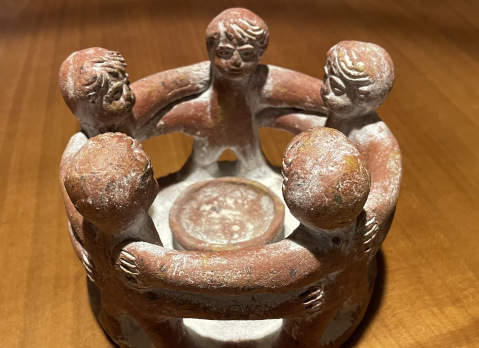

Impulskreis
jeweils von 18:30 – ca. 20 Uhr
Jeden 1. Montag im Monat (außer während der bayrischen Schulferien)
Kostenfreies Angebot
🌟 Austausch und Inspiration 🌟
Wir reflektieren die Tugend des letzten Monats und tauschen uns darüber aus, wie wir sie erlebt haben oder wie sie uns begegnet ist. Danach ziehen wir eine neue Tugendkarte und erkunden, was sie für uns bedeutet.
✨ Lust, mal reinzuschnuppern? ✨
Komm vorbei und lass dich inspirieren – du bist herzlich willkommen! 💛
- Moderation: Judith Böhme, Facilitator im Virtues Project
- 🕒 Zeit: von 18.30 Uhr bis ca. 20 Uhr
- 📍 Ort: Kempten
Termine in 2026
In der Regel jeden ersten Montag im Monat.
- November: Montag, 9.11. (2. Montag im Monat)
- Dezember: Montag, 7.12.
Termine in 2027
In der Regel jeden ersten Montag im Monat (außer in den bayrischen Schulferien).
- Januar: Montag, 11.1. (2. Montag im Monat)
- Februar: Montag, 1.2.
- März: Montag, 1.3.
- April: Montag, 5.4.
- Mai: Montag, 3.5.
- Juni: Montag, 7.6.
- Juli: Montag, 5.7.
- Sommerpause
- September: Montag, 13.9. (2. Montag im Monat)
- Oktober: Montag, 4.10.
- November: Montag, 8.11. (2. Montag im Monat)
- Dezember: Montag, 6.12.
Anmeldung
Melde dich gerne für den nächsten Termin hier an. Die genaue Adresse sende ich dir anschließend per E-Mail zu. Du bist herzlich willkommen – ich freue mich, wenn du dabei bist!